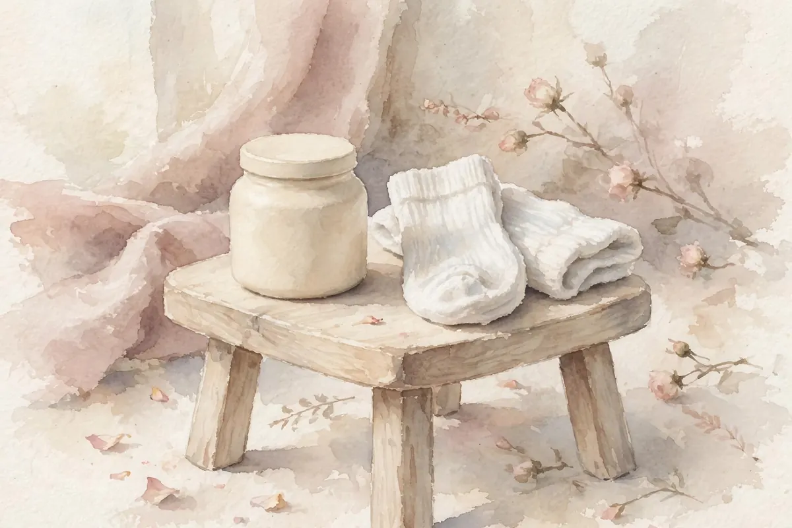

トップ ＞ ボディケア ＞ 足用クリームの量と表示の見方：かかと・足裏の塗る段取り
足用クリームの量と表示の見方：かかと・足裏の塗る段取り

足用クリームは、かかとや足裏の手入れに使うアイテムです。施術の現場でも、足の手入れは後回しになりやすい、という話をよく聞きます。顔や手と比べると、足は目に入りにくい場所ですが、靴下や靴で一日中覆われている場所でもあります。この記事では、足用クリームの表示の見方と、塗る量の目安を整理します。特定の商品の話ではなく、足用クリームという形のアイテムの使い方の考え方です。
足用クリームの表示で見るポイント
まず確認したいのは、用途の表示です。「かかと用」「足裏用」「足全体用」といった案内が書かれていることがあります。かかと用は、かかとの部分に集中的に使う設計になっていることが多く、足全体用は、足裏から足の甲まで広く塗ることを想定しています。用途に合ったものを選ぶのが無駄のない選択です。
次に、テクスチャーの表示です。「こっくりしたクリーム」「さらっとしたジェル」といった案内が書かれていることがあります。こっくりしたタイプは、かかとのような部分に留まりやすく、さらっとしたタイプは、足全体に広げやすいのが特徴です。使う場所に合わせて、テクスチャーを選ぶのが基本です。
また、「足指の間には使わないでください」「傷や異常のある部分には使わないでください」といった注意書きも、表示で確認しておきたい点です。足指の間は、クリームが残りやすい場所なので、使う場所の案内を守ります。香りの強さも、商品ごとに違うので、使う前に表示を確認しておきます。
部位別の量の目安と塗る順番
塗る量は、塗る面積で決めます。足裏全体に塗る場合は、両足分でさくらんぼ粒大ほどを目安に、手のひらに出します。かかとだけに塗る場合は、片足あたり小指の先ほどの量を目安にします。量は商品ごとに違うので、はじめて使うときは表示をよく読んでから始めます。
塗る順番は、「足裏全体、かかと、足の甲」の3つです。まず、足裏全体に薄く広げ、次にかかとに重ねて塗り、最後に足の甲を軽くなでるようにして仕上げます。足指の間は避け、足指の付け根は指先で軽く押さえるようにします。一度にたくさん出すと、余った分がベタつくので、少なめから足していくのが基本です。
塗るときは、座って足を前に出し、片足ずつ塗るのが段取りです。立ったまま塗ると、バランスを崩しやすくなります。お風呂上がりなど、足が清潔なときに塗るのが、無駄のない使い方です。塗ったあとは、手を洗って、クリームが手に残らないようにします。
塗るタイミングと靴下の段取り
塗るタイミングは、入浴後や就寝前が基本です。入浴後は、足の水分をタオルで押さえるようにしてふき取ってから塗ります。濡れたまま塗ると、クリームが広がりにくくなります。就寝前に塗る場合は、塗ったあとに靴下を履く段取りにしておきます。
靴下を履くときは、クリームがなじんでから履くのがポイントです。塗ってすぐに靴下を履くと、クリームが靴下に移ってしまいます。数分置いて、手のひらで押さえるようになじませてから、ゆったりした靴下を履きます。締め付けの強い靴下は避け、肌当たりのやわらかいものを選びます。
使い切りの目安は、商品ごとに違います。開封日をメモしておくと、使い切りの目安がつかみやすくなります。チューブタイプは、キャップを閉めて立てて保管し、ジャー容器は、フタをしっかり閉めて保管します。足に合わない感じがしたときは、使用をいったんやめて、気になる場合は皮膚科などの専門家に相談してください。この記事は足用クリームの使い方の案内であり、商品ごとに表示がある場合は、そちらが優先です。
セラフィナ「足は面積が広いから、量は少なめから足すの。かかとは最後に重ねると、ムラになりにくいよ」

セラフィナ｜美容の道具箱の案内役
「量と表示が分かれば、美容は失敗しない。」——セラフィナと白猫のモコが、買う前のチェックポイントを案内します。綺麗になりたい気持ちに正直に、でも表示は冷静に読むのが、このサイトの約束です。